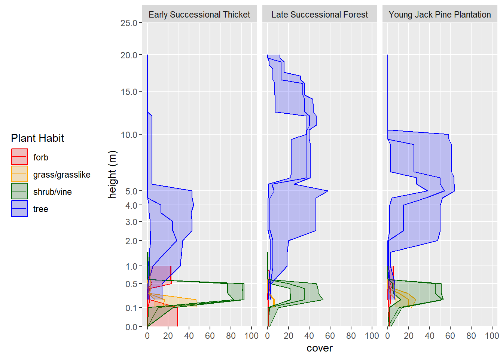

Chapter 7 Summarizing DSP Projects
The following scripts demonstrate a possible workflow for summarizing the vegetation data from a Dynamic Soil Properties (DSP) project. It assumes that all your data are in NASIS and that you have a all the ecological sites and community phases appropriately populated in the site and site observation tables.
7.0.1 Tabular Summaries
The goal of these tabular summaries is to compare the vegetation structure and composition of contrasting land uses.
#remotes::install_github("ncss-tech/soilDB", dependencies = FALSE) #install latest version of SoilDB package
#remotes::install_github("phytoclast/vegnasis", dependencies = FALSE) #install latest version of vegnasis package
library(soilDB)
library(vegnasis)
#Create conditional rounding functions
condRound10 <- function(x){
x <- ifelse(x < 0.05, 0, ifelse(x < 10, round(x, 1), round(x,0)))
x <- as.character(x)
return(x)
}
condRound1 <- function(x){
x <- ifelse(x < 0.05, 0, ifelse(x < 1, round(x, 1), round(x,0)))
x <- as.character(x)
return(x)
}
#Load Demo Data
siteass <- vegnasis::siteass20250414
sites <- vegnasis::sites20250414
veg.raw <- vegnasis::veg.raw20250414
vegplot <- vegnasis::vegplot20250414
vegground <- vegnasis::vegground20250414
#To use your own data, remove # below
# siteass <- get_site_association_from_NASIS(SS=F)
# sites <- get_site_data_from_NASIS_db(SS=F)
# veg.raw <- soilDB::get_vegplot_species_from_NASIS_db(SS=F)
# vegplot <- soilDB::get_vegplot_from_NASIS_db(SS=F)
# vegground <- get_vegplot_groundsurface_from_NASIS_db(SS=F)
#narrow to a project (user site association id)
thesesites <- subset(siteass, usiteassocid %in% 'DSP-F094AB019MI-2024')
sites <- subset(sites, usiteid %in% thesesites$usiteid)
landuse <- data.frame(siteobsiid=sites$siteobsiid, landuse = sites$commphasename)
landuse <- landuse |> left_join(data.frame(siteobsiid=vegplot$siteobsiid, plot = vegplot$vegplotid)) |> subset(!is.na(plot) & !is.na(landuse))
veg <- clean.veg(veg.raw)|> subset(!is.na(taxon))
veg <- veg |> inner_join(landuse)
veg <- veg |> mutate(type=NA) |> fill.type.df() |> fill.hts.df()
veg <- veg |> mutate(taxon = harmonize.taxa(veg$taxon, fix = TRUE, sensu = "usda"))
#Get vegetation Structure ----
veg.str <- veg |> get.structure(simple = TRUE)
veg.str <- veg.str |> inner_join(landuse)
veg.str.long <- tidyr::pivot_longer(veg.str, c(tree,shrub,herb,moss,ht.max))
veg.str.summary <- veg.str.long |> group_by(landuse, name) |> summarise(Low = round(quantile(value,0.05),1),
RV = round(mean(value),1),
High = round(quantile(value,0.95),1))
veg.str.wide <- tidyr::pivot_wider(veg.str.summary, names_from = landuse, values_from = c(Low,RV,High)) |> as.data.frame()
#kableextra ----
library(knitr)
library(kableExtra)
df2 <- veg.str.summary |> group_by(landuse) |> arrange()
df2$name <- factor(df2$name, levels = c('ht.max','tree','shrub','herb','moss'))
df2 <- df2[order(df2$landuse,df2$name),]
df2 |>
knitr::kable(row.names = FALSE, digits = c(0,0,0,0)) |>
remove_column(1) |>
kableExtra::group_rows(index = table(df2$landuse)) |>
# kableExtra::kable_paper("hover", full_width = F)
kable_classic(full_width = F, html_font = "Cambria")| name | Low | RV | High |
|---|---|---|---|
| Early Successional Thicket | |||
| ht.max | 4 | 7 | 11 |
| tree | 0 | 2 | 4 |
| shrub | 90 | 93 | 96 |
| herb | 29 | 44 | 65 |
| moss | 0 | 0 | 0 |
| Late Successional Forest | |||
| ht.max | 18 | 19 | 20 |
| tree | 38 | 42 | 47 |
| shrub | 28 | 53 | 74 |
| herb | 7 | 8 | 8 |
| moss | 38 | 51 | 67 |
| Young Jack Pine Plantation | |||
| ht.max | 7 | 9 | 10 |
| tree | 28 | 47 | 64 |
| shrub | 28 | 47 | 58 |
| herb | 14 | 21 | 30 |
| moss | 16 | 48 | 68 |
#flextable ----
library(flextable)
pcolors <- palette.colors(length(unique(veg.str$landuse))+1, palette = "ggplot2")
pcolors <- pcolors[2:length(pcolors)]
pcolors <- c('white',pcolors,pcolors,pcolors)
thcols <- 1:length(unique(veg.str$landuse))
thcols <- 3*thcols+1
df2 <- veg.str.wide
df2$name <- factor(df2$name, levels = c('ht.max','tree','shrub','herb','moss'))
df2 <- df2[order(df2$name),]
df2$name <- c('Maximum Height (m)','Tree (%)','Shrub (%)','Herb (%)','Moss (%)')
repnames <- colnames(df2)
repnames <- stringr::str_split_fixed(repnames, '_', 2)
repnamesA <- repnames[,2]
repnamesB <- repnames[,1]
repdf <- data.frame(A=repnamesA, B=repnamesB, C=pcolors)
repdf <- repdf |> mutate(seq = 1:nrow(repdf))
repdf <- repdf |> arrange(A)
repnames <- paste0(repnames[,2],'_',repnames[,1])
colnames(df2) <- repnames
df2 <- df2[,repdf$seq]
colnames(df2)[1]<-'Variable'
theme_design <- function(x) {
x <- border_remove(x)
std_border <- fp_border_default(width = 0.5, color = "black")
thk_border <- fp_border_default(width = 2, color = "black")
x <- fontsize(x, size = 10, part = "all")
x <- font(x, fontname = "Cambria", part = "all")
x <- align(x, align = "center", part = "all")
x <- bold(x, bold = TRUE, part = "all")
x <- bg(x, bg = "white", part = "body")
x <- bg(x, bg = repdf$C, part = "header")
x <- bg(x, bg = "white", part = "footer")
x <- color(x, color = "black", part = "all")
x <- padding(x, padding = 1, part = "all")
x <- border_outer(x, part="all", border = thk_border )
x <- border_inner_h(x, border = std_border, part="all")
x <- border_inner_v(x, border = std_border, part="all")
x <- vline(x, j = c(1,thcols), border = thk_border, part = "all")
x <- set_table_properties(x, layout = "fixed")
x
}
df2 |>
flextable() |>
separate_header() |>
autofit() |> theme_design()Variable | Early Successional Thicket | Late Successional Forest | Young Jack Pine Plantation | ||||||
|---|---|---|---|---|---|---|---|---|---|
Low | RV | High | Low | RV | High | Low | RV | High | |
Maximum Height (m) | 4.1 | 7.0 | 11.3 | 18.1 | 19.0 | 19.9 | 7.2 | 8.7 | 9.9 |
Tree (%) | 0.0 | 1.7 | 4.5 | 38.0 | 42.1 | 46.9 | 27.5 | 46.7 | 63.5 |
Shrub (%) | 90.3 | 93.4 | 96.0 | 28.3 | 53.0 | 73.6 | 28.5 | 46.6 | 57.7 |
Herb (%) | 28.8 | 44.2 | 64.9 | 7.0 | 7.7 | 8.5 | 14.1 | 21.4 | 29.7 |
Moss (%) | 0.0 | 0.1 | 0.4 | 37.6 | 51.0 | 67.2 | 16.3 | 48.4 | 67.5 |
#Species_Composition
taxon.fill <- merge(data.frame(group = unique(veg$landuse)), data.frame(taxon = unique(veg$taxon), Low = 0, RV = 0, High = 0)) |> mutate(type = vegnasis::fill.type(taxon)) |> unique()
taxon.fill <- taxon.fill[,c('group','taxon', 'type', 'Low', 'RV', 'High')]
veg.comp.summary <- veg |> summary.ESIS(group='landuse', breaks = c(5), normalize = F,
lowerQ = 0, upperQ = 1) |> ungroup()
veg.comp.summary <- veg.comp.summary |> mutate(Low = cover.Low, RV=cover.mean, High=cover.High)
overstory <- veg.comp.summary |> subset(Top > 5, select = c("group","taxon", "type","Low","RV","High"))
#add missing rows
o2 <- subset(taxon.fill, taxon %in% overstory$taxon)
o2 <- subset(o2, !paste(taxon,group) %in% paste(overstory$taxon,overstory$group) )
overstory <- overstory |> rbind(o2)
allplots <- overstory |> group_by(taxon, type) |> summarise(group = "All Landuses", Low = min(Low), RV = mean(RV), High = max(High)) |> arrange(-RV )
factorgroup <- unique(overstory$group)
factortaxon <- allplots$taxon
overstory <- rbind(overstory, allplots)
overstory$taxon <- factor(overstory$taxon, levels = factortaxon)
overstory$group <- factor(overstory$group, levels = c(factorgroup,"All Landuses"))
overstory <- overstory |> arrange(group, taxon)
overstory |>
knitr::kable(row.names = FALSE, digits = c(1,1,1,1,1)) %>%
remove_column(1) |> column_spec(1,italic=T) |>
kableExtra::group_rows(index = table(overstory$group)) |>
kable_classic(full_width = F, html_font = "Cambria")| taxon | type | Low | RV | High |
|---|---|---|---|---|
| Late Successional Forest | ||||
| Pinus banksiana | tree | 21 | 28.7 | 37.6 |
| Pinus resinosa | tree | 0 | 11.1 | 20.2 |
| Quercus velutina | tree | 0 | 5.3 | 16.0 |
| Quercus ellipsoidalis | tree | 0 | 1.7 | 5.0 |
| Abies balsamea | tree | 0 | 0.7 | 2.0 |
| Pinus strobus | tree | 0 | 0.3 | 0.8 |
| Early Successional Thicket | ||||
| Pinus banksiana | tree | 0 | 1.7 | 5.0 |
| Pinus resinosa | tree | 0 | 0.0 | 0.0 |
| Quercus velutina | tree | 0 | 0.0 | 0.0 |
| Quercus ellipsoidalis | tree | 0 | 0.0 | 0.0 |
| Abies balsamea | tree | 0 | 0.0 | 0.0 |
| Pinus strobus | tree | 0 | 0.0 | 0.0 |
| Young Jack Pine Plantation | ||||
| Pinus banksiana | tree | 25 | 46.7 | 65.0 |
| Pinus resinosa | tree | 0 | 0.0 | 0.0 |
| Quercus velutina | tree | 0 | 0.0 | 0.0 |
| Quercus ellipsoidalis | tree | 0 | 0.0 | 0.1 |
| Abies balsamea | tree | 0 | 0.0 | 0.0 |
| Pinus strobus | tree | 0 | 0.0 | 0.0 |
| All Landuses | ||||
| Pinus banksiana | tree | 0 | 25.7 | 65.0 |
| Pinus resinosa | tree | 0 | 3.7 | 20.2 |
| Quercus velutina | tree | 0 | 1.8 | 16.0 |
| Quercus ellipsoidalis | tree | 0 | 0.6 | 5.0 |
| Abies balsamea | tree | 0 | 0.2 | 2.0 |
| Pinus strobus | tree | 0 | 0.1 | 0.8 |
#Flextable ----
overstory.wide <- overstory |> mutate(Low = condRound1(Low), RV = condRound1(RV), High = condRound1(High)) |> tidyr::pivot_wider(names_from = group, values_from = c(Low,RV,High)) |> as.data.frame()
ngroups <- length(unique(overstory$group))
pcolors <- palette.colors(ngroups+1, palette = "ggplot2")
pcolors <- pcolors[2:length(pcolors)]
pcolors <- c('white','white',pcolors,pcolors,pcolors)
thcols <- 1:ngroups
thcols <- 3*thcols+2
df2 <- overstory.wide
repnames <- colnames(df2)
repnames <- stringr::str_split_fixed(repnames, '_', 2)
repnamesA <- repnames[,2]
repnamesB <- repnames[,1]
repdf <- data.frame(A=repnamesA, B=repnamesB, C=pcolors)
repdf <- repdf |> mutate(seq = 1:nrow(repdf),
seq2 = c(1:2,(1:ngroups)+2,(1:ngroups)+2,(1:ngroups)+2))
repdf <- repdf |> arrange(seq2)
repnames <- paste0(repnames[,2],'_',repnames[,1])
colnames(df2) <- repnames
df2 <- df2[,repdf$seq]
colnames(df2)[1:2]<- c('Taxon','Habit')
theme_design <- function(x) {
x <- border_remove(x)
std_border <- fp_border_default(width = 0.5, color = "black")
thk_border <- fp_border_default(width = 2, color = "black")
x <- fontsize(x, size = 10, part = "all")
x <- font(x, fontname = "Cambria", part = "all")
x <- italic(x, j=1, part = "body")
x <- align(x, align = "center", part = "all")
x <- align(x, align = "center", part = "header")
x <- align(x, align = "left", part = "body", j=1)
x <- align(x, align = "center", part = "body", j=2)
x <- bold(x, bold = TRUE, part = "all")
x <- bg(x, bg = "white", part = "body")
x <- bg(x, bg = repdf$C, part = "header")
x <- bg(x, bg = "white", part = "footer")
x <- color(x, color = "black", part = "all")
x <- padding(x, padding = 1, part = "all")
x <- border_outer(x, part="all", border = thk_border )
x <- border_inner_h(x, border = std_border, part="all")
x <- border_inner_v(x, border = std_border, part="all")
x <- vline(x, j = c(2,thcols), border = thk_border, part = "all")
x <- set_table_properties(x, layout = "fixed")
x
}
df2 |>
flextable() |>
separate_header() |>
autofit() |> theme_design()Taxon | Habit | Late Successional Forest | Early Successional Thicket | Young Jack Pine Plantation | All Landuses | ||||||||
|---|---|---|---|---|---|---|---|---|---|---|---|---|---|
Low | RV | High | Low | RV | High | Low | RV | High | Low | RV | High | ||
Pinus banksiana | tree | 21 | 29 | 38 | 0 | 2 | 5 | 25 | 47 | 65 | 0 | 26 | 65 |
Pinus resinosa | tree | 0 | 11 | 20 | 0 | 0 | 0 | 0 | 0 | 0 | 0 | 4 | 20 |
Quercus velutina | tree | 0 | 5 | 16 | 0 | 0 | 0 | 0 | 0 | 0 | 0 | 2 | 16 |
Quercus ellipsoidalis | tree | 0 | 2 | 5 | 0 | 0 | 0 | 0 | 0 | 0.1 | 0 | 0.6 | 5 |
Abies balsamea | tree | 0 | 0.7 | 2 | 0 | 0 | 0 | 0 | 0 | 0 | 0 | 0.2 | 2 |
Pinus strobus | tree | 0 | 0.3 | 0.8 | 0 | 0 | 0 | 0 | 0 | 0 | 0 | 0.1 | 0.8 |
#understory ----
understory <- veg.comp.summary |> subset(Top <= 5, select = c("group","taxon", "type", "Low","RV","High"))
u2 <- subset(taxon.fill, taxon %in% understory$taxon)
u2 <- subset(u2, !paste(taxon,group) %in% paste(understory$taxon,understory$group))
understory <- understory |> rbind(u2)
allplots <- understory |> group_by(taxon, type) |> summarise(group = "All Landuses", Low = min(Low), RV = mean(RV), High = max(High)) |> arrange(-RV )
keeptaxa <- subset(allplots, High >= 10)$taxon
factorgroup <- unique(understory$group)
factortaxon <- allplots$taxon
understory <- rbind(understory, allplots)
understory$taxon <- factor(understory$taxon, levels = factortaxon)
understory$group <- factor(understory$group, levels = c(factorgroup,"All Landuses"))
understory <- understory |> arrange(group, taxon) |> subset(taxon %in% keeptaxa)
options(knitr.kable.NA = '-')
understory |> #mutate(Low = condRound1(Low), RV = condRound1(RV), High = condRound1(High)) |>
knitr::kable(row.names = FALSE, digits = c(1,1,1,1,1)) %>%
remove_column(1) |> column_spec(1,italic=T) |>
kableExtra::group_rows(index = table(understory$group)) |>
kable_classic(full_width = F, html_font = "Cambria")| taxon | type | Low | RV | High |
|---|---|---|---|---|
| Late Successional Forest | ||||
| Vaccinium angustifolium | shrub/vine | 20.0 | 34.7 | 49.0 |
| Carex pensylvanica | grass/grasslike | 5.0 | 6.0 | 7.0 |
| Quercus ellipsoidalis | tree | 0.0 | 21.9 | 60.3 |
| Pleurozium schreberi | moss | 20.0 | 33.3 | 60.0 |
| Dicranum polysetum | moss | 15.0 | 21.7 | 30.0 |
| Cladina rangiferina | lichen | 1.0 | 5.3 | 10.0 |
| Pinus banksiana | tree | 0.1 | 0.9 | 2.3 |
| Pteridium aquilinum | forb | 0.0 | 0.8 | 2.0 |
| Comptonia peregrina | shrub/vine | 0.1 | 0.5 | 1.2 |
| Arctostaphylos uva-ursi | shrub/vine | 0.0 | 0.4 | 1.0 |
| Polytrichum | moss | 0.0 | 0.0 | 0.0 |
| Melampyrum lineare | forb | 0.1 | 0.3 | 0.6 |
| Prunus pumila | shrub/vine | 0.0 | 0.1 | 0.2 |
| Quercus velutina | tree | 0.0 | 1.6 | 4.9 |
| Gaultheria procumbens | shrub/vine | 0.0 | 4.0 | 11.0 |
| Early Successional Thicket | ||||
| Vaccinium angustifolium | shrub/vine | 72.0 | 83.0 | 90.0 |
| Carex pensylvanica | grass/grasslike | 6.0 | 23.7 | 50.0 |
| Quercus ellipsoidalis | tree | 0.2 | 15.8 | 33.2 |
| Pleurozium schreberi | moss | 0.0 | 0.0 | 0.0 |
| Dicranum polysetum | moss | 0.0 | 0.0 | 0.0 |
| Cladina rangiferina | lichen | 0.0 | 0.1 | 0.2 |
| Pinus banksiana | tree | 16.5 | 25.3 | 42.0 |
| Pteridium aquilinum | forb | 0.0 | 15.0 | 23.0 |
| Comptonia peregrina | shrub/vine | 6.0 | 13.7 | 29.0 |
| Arctostaphylos uva-ursi | shrub/vine | 0.0 | 8.8 | 26.0 |
| Polytrichum | moss | 0.0 | 0.1 | 0.2 |
| Melampyrum lineare | forb | 0.0 | 10.8 | 32.0 |
| Prunus pumila | shrub/vine | 0.3 | 9.8 | 23.0 |
| Quercus velutina | tree | 0.0 | 0.0 | 0.0 |
| Gaultheria procumbens | shrub/vine | 0.0 | 1.0 | 3.0 |
| Young Jack Pine Plantation | ||||
| Vaccinium angustifolium | shrub/vine | 7.0 | 32.3 | 48.0 |
| Carex pensylvanica | grass/grasslike | 6.0 | 15.0 | 20.0 |
| Quercus ellipsoidalis | tree | 0.0 | 4.6 | 7.0 |
| Pleurozium schreberi | moss | 0.0 | 6.7 | 15.0 |
| Dicranum polysetum | moss | 5.0 | 16.7 | 35.0 |
| Cladina rangiferina | lichen | 1.0 | 27.0 | 40.0 |
| Pinus banksiana | tree | 0.2 | 0.5 | 1.0 |
| Pteridium aquilinum | forb | 0.0 | 2.7 | 6.0 |
| Comptonia peregrina | shrub/vine | 0.7 | 3.9 | 6.0 |
| Arctostaphylos uva-ursi | shrub/vine | 0.2 | 5.7 | 14.0 |
| Polytrichum | moss | 0.0 | 13.4 | 40.0 |
| Melampyrum lineare | forb | 0.1 | 0.8 | 2.0 |
| Prunus pumila | shrub/vine | 0.2 | 0.5 | 1.0 |
| Quercus velutina | tree | 0.0 | 5.4 | 16.2 |
| Gaultheria procumbens | shrub/vine | 0.0 | 0.0 | 0.1 |
| All Landuses | ||||
| Vaccinium angustifolium | shrub/vine | 7.0 | 50.0 | 90.0 |
| Carex pensylvanica | grass/grasslike | 5.0 | 14.9 | 50.0 |
| Quercus ellipsoidalis | tree | 0.0 | 14.1 | 60.3 |
| Pleurozium schreberi | moss | 0.0 | 13.3 | 60.0 |
| Dicranum polysetum | moss | 0.0 | 12.8 | 35.0 |
| Cladina rangiferina | lichen | 0.0 | 10.8 | 40.0 |
| Pinus banksiana | tree | 0.1 | 8.9 | 42.0 |
| Pteridium aquilinum | forb | 0.0 | 6.2 | 23.0 |
| Comptonia peregrina | shrub/vine | 0.1 | 6.0 | 29.0 |
| Arctostaphylos uva-ursi | shrub/vine | 0.0 | 5.0 | 26.0 |
| Polytrichum | moss | 0.0 | 4.5 | 40.0 |
| Melampyrum lineare | forb | 0.0 | 4.0 | 32.0 |
| Prunus pumila | shrub/vine | 0.0 | 3.5 | 23.0 |
| Quercus velutina | tree | 0.0 | 2.3 | 16.2 |
| Gaultheria procumbens | shrub/vine | 0.0 | 1.7 | 11.0 |
#understory flextable ----
understory.wide <- understory |> mutate(Low = condRound1(Low), RV = condRound1(RV), High = condRound1(High)) |> tidyr::pivot_wider(names_from = group, values_from = c(Low,RV,High)) |> as.data.frame()
ngroups <- length(unique(understory$group))
pcolors <- palette.colors(ngroups+1, palette = "ggplot2")
pcolors <- pcolors[2:length(pcolors)]
pcolors <- c('white','white',pcolors,pcolors,pcolors)
thcols <- 1:ngroups
thcols <- 3*thcols+2
df2 <- understory.wide
repnames <- colnames(df2)
repnames <- stringr::str_split_fixed(repnames, '_', 2)
repnamesA <- repnames[,2]
repnamesB <- repnames[,1]
repdf <- data.frame(A=repnamesA, B=repnamesB, C=pcolors)
repdf <- repdf |> mutate(seq = 1:nrow(repdf),
seq2 = c(1:2,(1:ngroups)+2,(1:ngroups)+2,(1:ngroups)+2))
repdf <- repdf |> arrange(seq2)
repnames <- paste0(repnames[,2],'_',repnames[,1])
colnames(df2) <- repnames
df2 <- df2[,repdf$seq]
colnames(df2)[1:2]<- c('Taxon','Habit')
theme_design <- function(x) {
x <- border_remove(x)
std_border <- fp_border_default(width = 0.5, color = "black")
thk_border <- fp_border_default(width = 2, color = "black")
x <- fontsize(x, size = 10, part = "all")
x <- font(x, fontname = "Cambria", part = "all")
x <- italic(x, j=1, part = "body")
x <- align(x, align = "center", part = "all")
x <- align(x, align = "center", part = "header")
x <- align(x, align = "left", part = "body", j=1)
x <- align(x, align = "center", part = "body", j=2)
x <- bold(x, bold = TRUE, part = "all")
x <- bg(x, bg = "white", part = "body")
x <- bg(x, bg = repdf$C, part = "header")
x <- bg(x, bg = "white", part = "footer")
x <- color(x, color = "black", part = "all")
x <- padding(x, padding = 1, part = "all")
x <- border_outer(x, part="all", border = thk_border )
x <- border_inner_h(x, border = std_border, part="all")
x <- border_inner_v(x, border = std_border, part="all")
x <- vline(x, j = c(2,thcols), border = thk_border, part = "all")
x <- set_table_properties(x, layout = "fixed")
x
}
df2 |>
flextable() |>
separate_header() |>
autofit() |> theme_design()Taxon | Habit | Late Successional Forest | Early Successional Thicket | Young Jack Pine Plantation | All Landuses | ||||||||
|---|---|---|---|---|---|---|---|---|---|---|---|---|---|
Low | RV | High | Low | RV | High | Low | RV | High | Low | RV | High | ||
Vaccinium angustifolium | shrub/vine | 20 | 35 | 49 | 72 | 83 | 90 | 7 | 32 | 48 | 7 | 50 | 90 |
Carex pensylvanica | grass/grasslike | 5 | 6 | 7 | 6 | 24 | 50 | 6 | 15 | 20 | 5 | 15 | 50 |
Quercus ellipsoidalis | tree | 0 | 22 | 60 | 0.2 | 16 | 33 | 0 | 5 | 7 | 0 | 14 | 60 |
Pleurozium schreberi | moss | 20 | 33 | 60 | 0 | 0 | 0 | 0 | 7 | 15 | 0 | 13 | 60 |
Dicranum polysetum | moss | 15 | 22 | 30 | 0 | 0 | 0 | 5 | 17 | 35 | 0 | 13 | 35 |
Cladina rangiferina | lichen | 1 | 5 | 10 | 0 | 0.1 | 0.2 | 1 | 27 | 40 | 0 | 11 | 40 |
Pinus banksiana | tree | 0.1 | 0.9 | 2 | 16 | 25 | 42 | 0.2 | 0.5 | 1 | 0.1 | 9 | 42 |
Pteridium aquilinum | forb | 0 | 0.8 | 2 | 0 | 15 | 23 | 0 | 3 | 6 | 0 | 6 | 23 |
Comptonia peregrina | shrub/vine | 0.1 | 0.5 | 1 | 6 | 14 | 29 | 0.7 | 4 | 6 | 0.1 | 6 | 29 |
Arctostaphylos uva-ursi | shrub/vine | 0 | 0.4 | 1 | 0 | 9 | 26 | 0.2 | 6 | 14 | 0 | 5 | 26 |
Polytrichum | moss | 0 | 0 | 0 | 0 | 0.1 | 0.2 | 0 | 13 | 40 | 0 | 4 | 40 |
Melampyrum lineare | forb | 0.1 | 0.3 | 0.6 | 0 | 11 | 32 | 0.1 | 0.8 | 2 | 0 | 4 | 32 |
Prunus pumila | shrub/vine | 0 | 0.1 | 0.2 | 0.3 | 10 | 23 | 0.2 | 0.5 | 1 | 0 | 3 | 23 |
Quercus velutina | tree | 0 | 2 | 5 | 0 | 0 | 0 | 0 | 5 | 16 | 0 | 2 | 16 |
Gaultheria procumbens | shrub/vine | 0 | 4 | 11 | 0 | 1 | 3 | 0 | 0 | 0.1 | 0 | 2 | 11 |
7.0.2 Ground Surface Cover
This analysis summarizes the contents of the NASIS ground surface cover transect. It assumes that lichen hits are coded as biological crust, while bryophytes of any type are populated as moss. Coarse woody debris are colloquially labeled as logs, fine woody debris are referred to as sticks. Large surface fragments like cobbles are here just called rocks.
library(ggplot2)
#Transect
#narrow to a project (user site association id)
thesesites <- subset(siteass, usiteassocid %in% 'DSP-F094AB019MI-2024')
gsite <- subset(sites, usiteid %in% thesesites$usiteid, select=c(siteiid, site_id, commphasename))|> unique()
gsurf <- vegground |> subset(!is.na(groundsurfcovtype) & siteiid %in% gsite$siteiid) |> left_join(gsite,relationship = "many-to-many") |> mutate(cover = round(ifelse(!is.na(totalpointssampledcount) & !is.na(groundcoverptcount), groundcoverptcount/totalpointssampledcount*100, groundcoverptpct), 1))
gsurf <- gsurf |> mutate(gt = groundsurfcovtype,
gtype = case_when(gt %in% c("litter","embedded litter") ~ 'Litter',
gt %in% c("downed wood, coarse-large","downed wood, coarse-small","tree snags, hard","tree snags, soft") ~ 'Logs',
gt %in% c("downed wood, fine-large","downed wood, fine-medium","downed wood, fine-small") ~ 'Sticks',
gt %in% c("nonvascular plant") ~ 'Moss',
gt %in% c("forb","tree", "grass or grasslike", "shrub or vine or liana") ~ 'Plant Bases',
gt %in% c("biological crust") ~ 'Lichen',
gt %in% c("bare ground") ~ 'Soil',
gt %in% c("water") ~ 'Water',
gt %in% c("bedrock") ~ 'Bedrock',
gt %in% c("surface fragments, small") ~ 'Gravel',
gt %in% c("surface fragments, large") ~ 'Rocks'),
plot = vegplotid)
gsurf$gtype <- factor(gsurf$gtype, levels = c('Water', 'Bedrock', 'Soil', 'Gravel', 'Rocks', 'Litter', 'Sticks', 'Logs', 'Lichen', 'Moss', 'Plant Bases'))
gcolors <- c('lightcyan', 'gray30', 'lightyellow', 'lightgray', 'darkgray', 'burlywood1', 'burlywood3', 'burlywood4', 'palegreen', 'forestgreen', 'lawngreen')
gsurf2 <- subset(gsurf, !is.na(cover)) |> group_by(vegplotid, commphasename, vegplotname) |> mutate(totalcover = sum(cover)) |> ungroup() |> group_by(vegplotid, commphasename, vegplotname, gtype) |>
# group_by(gtype) |>
summarise(Cover = sum(cover/totalcover*100))
# pie(x = gsurf2$Cover, labels = gsurf2$gtype, col=gcolors)
ggplot(gsurf2)+
geom_col(aes(x=vegplotname, y=Cover, fill=gtype))+
scale_fill_manual(breaks = levels(gsurf2$gtype), values = gcolors)+
scale_x_discrete(name = 'Plot')+
scale_y_continuous(expand = c(0,0))
7.0.3 Structural Triangle
The structural triangle is the vegetation equivalent of the soil textural triangle. It requires that you install the ggtern package, which is similar in syntax as the ggplot2 plotting package, except that it uses a triangle coordinate system instead of a Cartesian coordinate system. Although the triangle plot has 3 dimensions, it actuality it is mainly a function of total tree cover and total woody plant cover, which by process of arithmetic can be rendered to effective shrub cover and none-of-the-above cover to represent the non-woody component of cover (actual herb cover may be less than 100% of this component).
library(ggtern)
thesesites <- subset(siteass, usiteassocid %in% 'DSP-F094AB019MI-2024')
sites <- subset(sites, usiteid %in% thesesites$usiteid)
landuse <- data.frame(siteobsiid=sites$siteobsiid, landuse = sites$commphasename)
landuse <- landuse |> left_join(data.frame(siteobsiid=vegplot$siteobsiid, plot = vegplot$vegplotid)) |> subset(!is.na(plot) & !is.na(landuse))
veg <- clean.veg(veg.raw)|> subset(!is.na(taxon))
veg <- veg |> inner_join(landuse)
veg <- veg |> mutate(type=NA) |> fill.type.df() |> fill.hts.df()
veg <- veg |> mutate(taxon = harmonize.taxa(veg$taxon, fix = TRUE, sensu = "usda"))
#Get vegetation Structure ----
veg <- veg |> mutate(tree = ifelse(type %in% c('tree', 'shrub/vine') & ht.max > 5,cover,0),
woody = ifelse(type %in% c('tree', 'shrub/vine'),cover,0))
veg.tern <- veg |> group_by(plot, label) |> summarise(tree = cover.agg(tree), woody = cover.agg(woody), shrub = woody - tree, open = 100 - woody)
veg.tern <- veg.tern |> left_join(landuse)
s1 <- data.frame(open = c(35,0,0),
tree = c(65,100,65),
shrub = c(0,0,35), group="1 forest")
s2 <- data.frame(open = c(25,25,0,0),
tree = c(10,65,65,10),
shrub = c(65,10,35,90), group="2 dense scrubby woodland")
s3 <- data.frame(open = c(80,25,25),
tree = c(10,65,10),
shrub = c(10,10,65), group="3 open scrubby woodland")
s4 <- data.frame(open = c(90,35,25,80),
tree = c(10,65,65,10),
shrub = c(0,0,10,10), group="4 open woodland/savanna")
s5 <- data.frame(open = c(25,25,0,0),
tree = c(0,10,10,0),
shrub = c(75,65,90,100), group="5 shrub thicket")
s6 <- data.frame(open = c(90,80,25,25),
tree = c(0,10,10,0),
shrub = c(10,10,65,75), group="6 open shrubland")
s7 <- data.frame(open = c(100,90,80,90),
tree = c(0,10,10,0),
shrub = c(0,0,10,10), group="7 open grassland")
str.polys = rbind(s1,s2,s3,s4,s5,s6,s7)
gp <- ggtern() +
geom_polygon(data=str.polys, aes(fill=group, x=open, y=tree, z=shrub),alpha=0.25, linewidth=0.1, color='black') +
geom_point(data=veg.tern, aes(x=open, y=tree, z=shrub, shape = landuse), size=3)+
geom_text(data=veg.tern, aes(x=open, y=tree, z=shrub, label=label), vjust=-1, hjust=1, size=2)+
scale_shape_manual(values=c(17, 16, 8)) +
scale_fill_manual(values=c('darkcyan','darkgreen','green','yellowgreen','red','orange','yellow')) +
theme(legend.position=c(0,1),legend.justification=c(0,1)) +theme_nomask()+
labs(fill="Vegetation Structure")
gp
7.0.4 Structural Profile
Similar to the soil properties graphs along a soil profile, this script shows how to generated a stratum profile of differnt plant functional groups.
#Create slices through the crowns
veg.str <- summary.crown.thickness(veg, breaks = c(c(-1:9)/10,c(2:100)/2)) |> structure.fill.zero() |> subset(type %in% c('tree', 'shrub/vine', 'grass/grasslike', 'forb'))
veg.str <- veg.str |> left_join(landuse)
veg.str.pct <- veg.str |> group_by(landuse, type, stratum, stratum.label, bottom, top) |>
summarise(X25 = quantile(Cover, 0.05),
X50 = quantile(Cover, 0.5),
X75 = quantile(Cover, 0.95))
ggplot(veg.str.pct, aes(x = top, y = X50, col=type)) +
# plot median
geom_line() +
# plot quantiles
geom_ribbon(aes(ymin = X25, ymax = X75, x = top, fill=type), alpha = 0.2) +
coord_flip() +
theme(legend.position = "left")+
scale_fill_manual(name='Plant Habit', values = c('red', 'orange', 'darkgreen', 'blue'))+
scale_color_manual(name='Plant Habit', values = c('red', 'orange', 'darkgreen', 'blue'))+
scale_x_continuous(name='height (m)', breaks=c(0,0.1,0.5,c(1:4),c(1:100)*5), minor_breaks = NULL, limits = c(0,25), expand = c(0,0), trans = 'sqrt')+
scale_y_continuous(name='cover', breaks=c((0:5)*20), limits = c(0,100))+
facet_wrap(~ landuse, nrow=1)